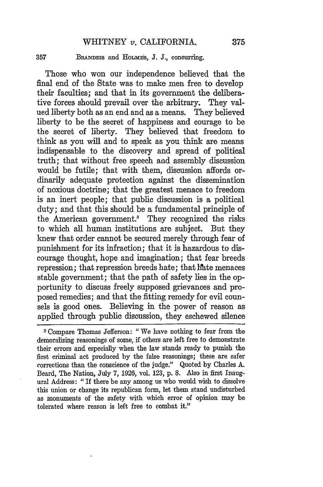
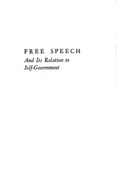
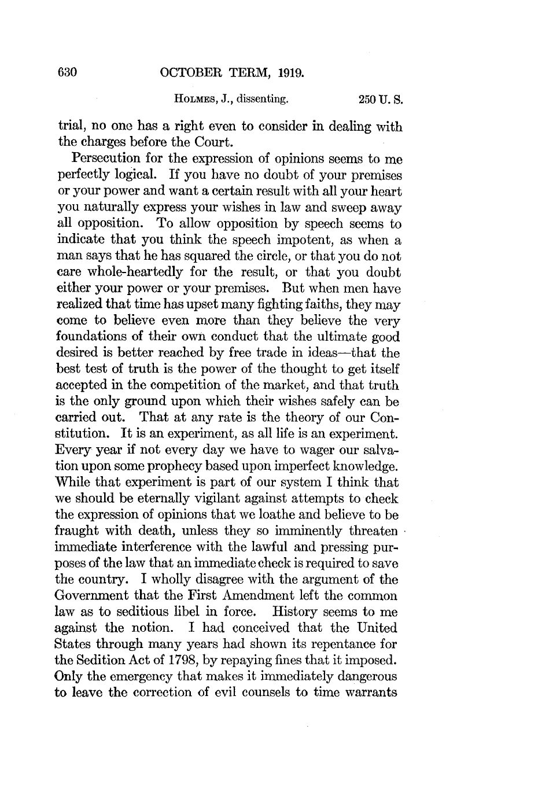
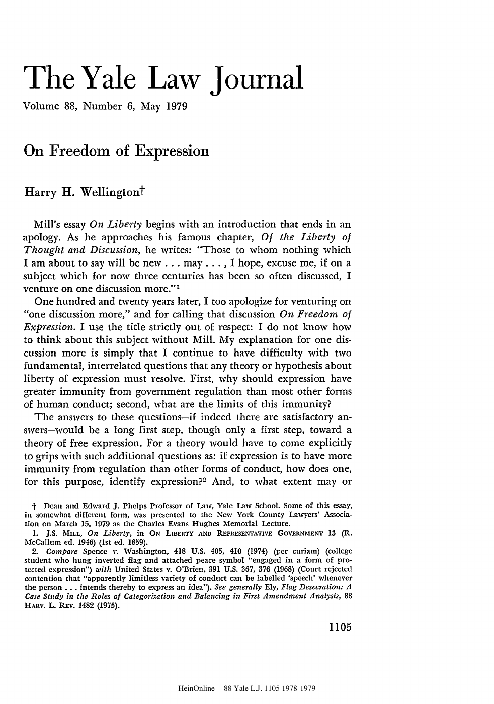
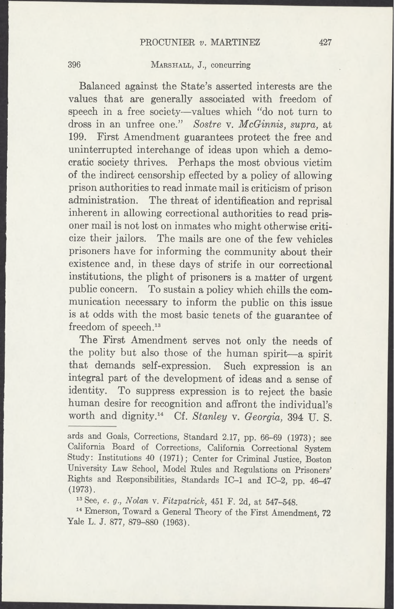

1:14:35 · 10 OPERE
Considerazioni su libertà di parola e diritto all'autodifesa nella Costituzione americana.
Il filo del discorso
Il contributo propone una difesa dell’autonomia individuale attraverso un confronto fra libertà di parola e diritto di possedere armi nella Costituzione americana. Dr Divago considera il secondo emendamento una garanzia materiale contro la soppressione dei diritti proclamati nel primo. È la tesi politico-interpretativa del relatore: il testo dei due emendamenti non contiene una dichiarazione esplicita secondo cui il secondo renda giuridicamente efficace il primo, né il loro accostamento risolve da solo i problemi della regolazione delle armi. La premessa riguarda il modo di discutere eventi tragici, con una probabile allusione alla strage di Uvalde in Texas. Il relatore condanna l’uccisione di persone innocenti e contesta l’uso delle emozioni per orientare il dibattito pubblico. Un influencer culturale italiano, non nominato, diventa il bersaglio della critica: la scheda non gli attribuisce una identità dedotta da indizi né trasforma gli attacchi personali in diagnosi. Propaganda di Bernays e la verità effettuale di Machiavelli, probabilmente Il Principe XV, introducono il contrasto fra esperienza delle cose e rappresentazione mediatica. La digressione su Freud, il sogno e la pubblicità serve a spiegare perché la persuasione non passi soltanto per il ragionamento esplicito. Dr Divago descrive una pluralità di modi di fare esperienza e propone l’esempio degli orologi pubblicitari alle dieci e dieci. Il sogno definito quantistico resta una metafora sua, non una tesi scientifica dimostrata; le immagini dell’iceberg e dell’inconscio non individuano un libro preciso di Freud. Anche la distinzione fra ragione ed emozione non permette di stabilire la falsità di una notizia dal solo fatto che susciti dolore o indignazione. Il percorso principale passa per un manuale attribuito a Erwin Chemerinsky, del quale il video legge alcuni brani ma non consente di stabilire con sicurezza titolo ed edizione. L’indicazione di circa milleottocento pagine non basta a scegliere fra il casebook Constitutional Law, il trattato Principles and Policies e altri testi che riprendono gli stessi argomenti. Il relatore contesta l’esempio di chi grida in tribunale, perché interpreta la libertà di parola anzitutto come discussione argomentata. Dal contrasto emerge un problema reale del ragionamento giuridico: distinguere il contenuto di una opinione, le modalità della sua espressione e i limiti che consentono ad altre persone di parlare e ascoltare. Il punto centrale è la lunga lettura dell’opinione concorrente di Brandeis in Whitney v. California del 1927, alla quale aderisce Holmes. Non è l’opinione di maggioranza della Corte. Dr Divago vi trova uno Stato orientato allo sviluppo delle facoltà umane e una cittadinanza che difende la libertà discutendo, anziché restando inerte. Coraggio, pensiero indipendente e possibilità di proporre rimedi formano il nucleo positivo del contributo. L’idea che un cattivo consiglio si contrasti con un consiglio migliore sostiene una concezione attiva della discussione pubblica, ma non sostituisce l’analisi del contesto storico della pronuncia o delle specifiche regole applicabili. Le successive citazioni articolano tre ragioni della libertà di espressione: autogoverno, ricerca della verità e sviluppo dell’autonomia individuale. La frase di Alexander Meiklejohn sul suffragio universale è riconducibile a Free Speech and Its Relation to Self-Government, pp.26–27. La metafora del confronto fra idee è invece collazionata al dissenso di Holmes in Abrams v. United States del 1919, p.630: un testo distinto da Whitney. Il passo di John Stuart Mill sulla perdita subita dall’umanità quando si mette a tacere una opinione rinvia a On Liberty, capitolo II. Queste identificazioni derivano dal confronto testuale: non si attribuisce al video una lettura diretta di ogni volume originario. Harry Wellington offre una complicazione: anche ammettendo che le idee vere prevalgano a lungo termine, il periodo in cui circolano convinzioni false può durare molto e produrre danni. La citazione è riconducibile a On Freedom of Expression del 1979, p.1130. Il richiamo a Thurgood Marshall proviene dall’opinione concorrente in Procunier v. Martinez del 1974, p.427, sul rapporto fra censura della corrispondenza dei detenuti ed espressione di sé. Dr Divago utilizza questi brani per contestare restrizioni contemporanee, soprattutto durante la pandemia. Occorre però distinguere critica delle piattaforme e violazione costituzionale: il primo emendamento limita l’azione governativa e non rende automaticamente illegittima qualsiasi decisione di un soggetto privato. Le valutazioni sulla competenza scientifica o sulle conseguenze di misure sanitarie rimangono attribuite, senza inferire che ogni discorso censurato fosse perciò vero. Nella seconda parte il relatore torna alle armi. Propone una formazione simile alla patente di guida e sostiene che i limiti legali colpiscano soprattutto i cittadini rispettosi della legge. È un argomento politico, non la dimostrazione dell’inefficacia di ogni regolazione. Se il riferimento texano è Uvalde, la documentazione del Congresso conferma che l’autore della strage aveva acquistato legalmente le armi: la descrizione di un possesso già illecito non viene quindi recepita. Non si formula una diagnosi sul tiratore. Le comparazioni fra Stati, Camden e Baghdad mancano nel video dei dati necessari a confrontare anni, popolazioni e tipologie di decesso: non sono convertite in statistiche verificate. Neppure l’esperienza personale di non aver assistito a una sparatoria misura il rischio collettivo. Il finale sviluppa una cronologia del controllo delle armi e di regimi responsabili di massacri. Sono necessarie alcune distinzioni: il Pistols Act britannico è del 1903, non 1909; la legge americana del 1934 introduceva un sistema fiscale e di registrazione per determinate categorie di armi; il ritorno alla libertà di possedere oro è collegato alla legislazione del 1974, non al 1971. La frase britannica sull’inadeguatezza delle armi come protezione non è verificata come citazione letterale del Firearms Act 1937. La successione di una restrizione e di un crimine di massa non prova da sola che la prima abbia causato il secondo, e i conteggi richiederebbero verifiche specifiche. L’accostamento delle Auxiliary Units britanniche della Seconda guerra mondiale ai successivi programmi stay-behind resta una analogia storica, senza dimostrare identità di organizzazioni. La conclusione riprende l’interrogativo di partenza: quale rapporto debba esserci fra sicurezza, responsabilità del cittadino e limiti del potere.
I libri nel discorso

Il Principe
Identificazione probabile
Copertina: Feltrinelli · 2013 · a cura di Ugo Dotti
Immagine autentica dell’opera, controllata visivamente; l’edizione di riferimento non è attribuita al filmato.
La verità effettuale delle cose richiama il capitolo XV; titolo non pronunciato.
Passaggio 2:01 ↗ · Fonti e libro ↗
Propaganda
Copertina: Apogeo · Saggi, marzo 2026 · traduzione e redazione Aldo Ballerini
Copertina autentica dell’edizione Apogeo del marzo 2026, successiva alla registrazione del video: è un riferimento bibliografico attuale, non l’esemplare citato nel filmato. Titolo originale dell’opera Propaganda, 1928.
Bernays e il titolo Propaganda sono riconoscibili durante la digressione sugli influencer.
Passaggio 4:25 ↗ · Fonti e libro ↗
Costituzione degli Stati Uniti d’America
Copertina della raccolta: Testo firmato il17settembre1787. Per l’immagine si usa la raccolta Penguin Classics The Federalist Papers, ISBN 9780140444957, che dichiara di includere il testo della Costituzione; non è una fotografia della pergamena originaria.
Copertina autentica di The Federalist Papers: la descrizione editoriale attesta che la raccolta comprende il testo completo della Costituzione. Non è il frontespizio costituzionale del 1787 e Hamilton, Madison e Jay non sono presentati come unici autori del documento.
Lettura del primo emendamento a 968 s e del secondo a 1123 s; una sola voce per il testo costituzionale con emendamenti.
Passaggio 16:08 ↗ · Fonti e libro ↗
Opinione concorrente in Whitney v. California, 274 U.S. 357 (1927)
Pagina interna 375 dell’opinione concorrente, non copertina: United States Reports 274, 1927, pagina interna 375; opinione concorrente Brandeis/Holmes
Pagina 375 autentica della pubblicazione giudiziaria, pagina 19 della scansione PDF LoC. Non copertina, frontespizio o testo della maggioranza.
Brandeis, Whitney v. California e 1927 sono espliciti; brano collazionato a 375 dell’opinione concorrente, non maggioranza.
Passaggio 28:32 ↗ · Fonti e libro ↗
Costituzione della Repubblica Italiana
Copertina dell’edizione Intra aggiornata al 2023: Intra · 2023 · introduzione di Umberto Vincenti
Copertina autentica del testo integrale, aggiornata alla legge costituzionale 26 settembre 2023 n.1. È successiva al filmato del 2019 e non rappresenta la versione storica letta dal relatore. Umberto Vincenti firma l’introduzione.
Richiamo esplicito alla Costituzione italiana e alla dignità della persona nel confronto con i principi americani.
Passaggio 30:38 ↗ · Fonti e libro ↗
Free Speech and Its Relation to Self-Government
Identificazione probabile
Occhietto autentico con il titolo; non copertina esterna né frontespizio completo con autore: Harper & Brothers, New York, 1948; occhietto della prima edizione digitalizzata da Wisconsin
Il record istituzionale attribuisce il volume a Meiklejohn. La pagina preliminare reca soltanto il titolo; non è un frontespizio completo e il nome dell’autore non vi è visibile.
Alexander Meiklejohn è nominato; la frase sul suffragio universale è collazionata nelle pp.26–27 del volume 1948. Titolo non pronunciato.
Passaggio 38:41 ↗ · Fonti e libro ↗
Opinione dissenziente in Abrams v. United States, 250 U.S. 616 (1919)
Identificazione probabile
Pagina interna autentica 630 dell’opinione dissenziente; non copertina o frontespizio: United States Reports 250, 1919, pagina interna 630; dissenso Holmes, aderente Brandeis
Pagina 15 della copia digitalizzata dalla Library of Congress. L’immagine è della fonte della frase, non del manuale Chemerinsky né della maggioranza del caso.
Holmes è nominato e si legge il test della verità nella competizione delle idee: riscontro in Abrams, p.630. Caso non nominato, identificazione probabile.
Passaggio 42:51 ↗ · Fonti e libro ↗
Saggio sulla libertà
Identificazione probabile
Copertina: Il Saggiatore
La frase sul silenziare una opinione è riconducibile a On Liberty, capitolo II. Titolo non pronunciato; allusione probabile.
Passaggio 43:12 ↗ · Fonti e libro ↗
On Freedom of Expression
Identificazione probabile
Prima pagina autentica dell’articolo con titolo e autore; non copertina della rivista: The Yale Law Journal 88(6), maggio 1979, pp.1105–1142; prima pagina dell’articolo 1105
Pagina 1 del PDF dell’articolo, distinta dalla seconda pagina 1106. Rendering integrale; il documento non è stato riscritto o ridisegnato.
Harry Wellington è nominato; parole sul lungo e breve periodo collazionate in On Freedom of Expression, p.1130, 1979. Titolo non pronunciato.
Passaggio 45:45 ↗ · Fonti e libro ↗
Opinione concorrente in Procunier v. Martinez, 416 U.S. 396 (1974)
Identificazione probabile
Pagina interna autentica 427 dell’opinione concorrente; non copertina o frontespizio: United States Reports 416, 1974, pagina interna 427, Marshall, J., concurring
Pagina 32 del documento ufficiale. La pagina 428 appartiene alla continuazione e non viene usata per errore come 427.
La frase attribuita a Marshall sullo spirito umano è collazionata in Procunier v. Martinez, p.427 (1974), concurrence. Caso non nominato, identificazione probabile.
Passaggio 47:44 ↗ · Fonti e libro ↗